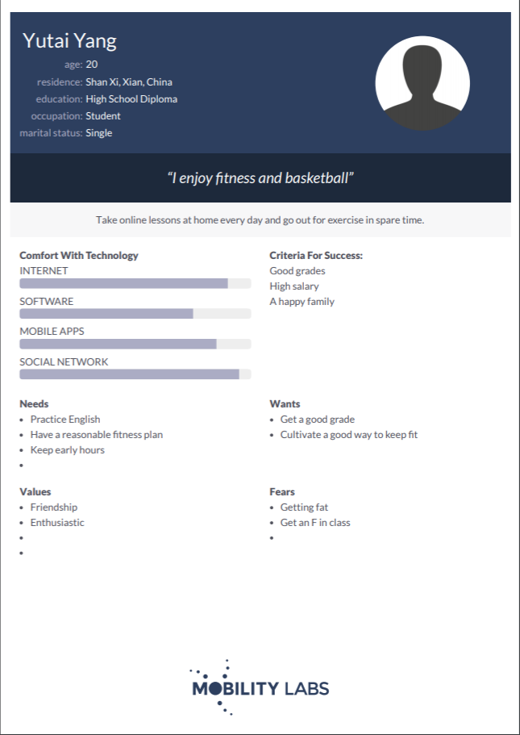
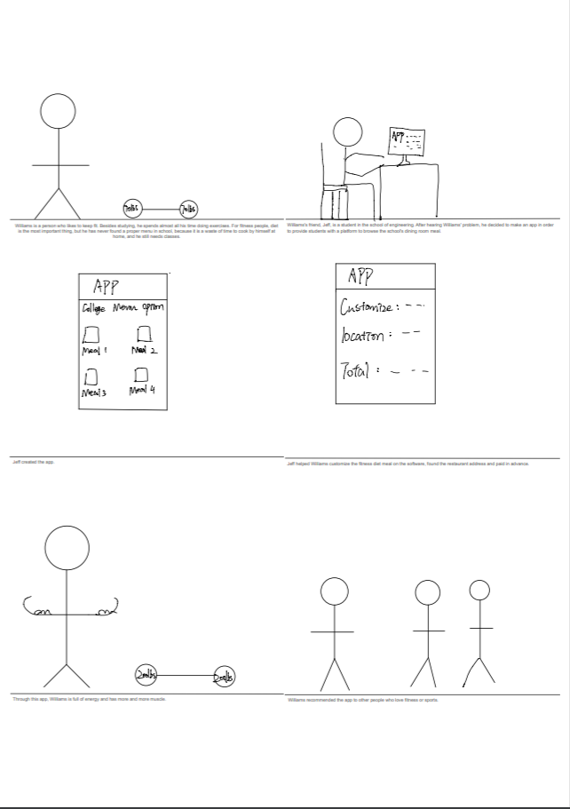
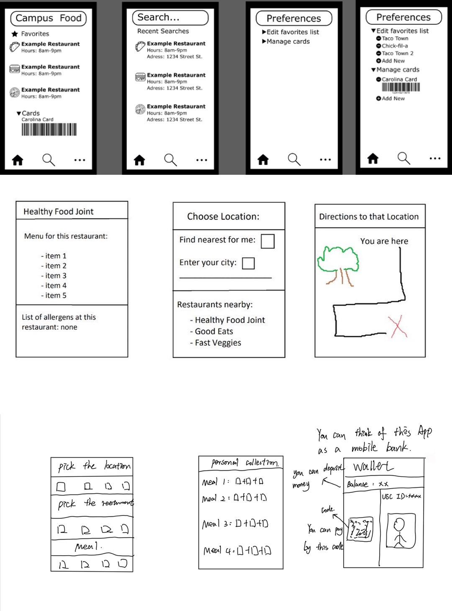
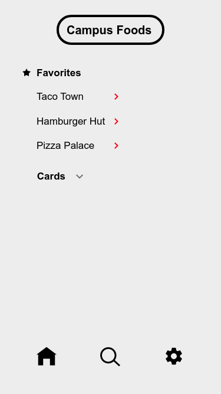
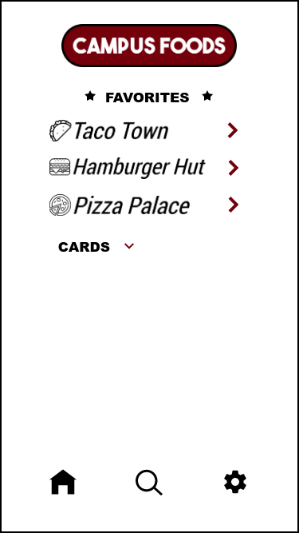

Problem Statement : College Menu Options

At school campuses, certain restaurants often change what they offer, without having a public menu available. This leads to students having to guess where to eat in order to have a healthy and varied diet. The stagnation of meals and lack of variety in diet is not only unhealthy, but the time spent eating with friends becomes boring and almost a chore. College students need an easy and efficient way to discover the options on the menus of each campus diner because many students often eat the same food every week without knowing the choices of other dining locations. Our solution will provide college students with those necessary healthy options.
Affinity Diagram: College Menu Options

It's great that we set up a time and discussed how to improve the college menu and a series of questions,.
Persona: 3 Persona for College Menu Options
A persona of a typical trail mix app user.
Storyboard: Williams
A comic strip illutrating the need for College Menu Options App.
Sketching: College Menu Options
A sketch of potential app solution for Collehe Menu Options by our group.
Paper Prototype: College Menu Options App

This is a basic software interface.
Usability Testing Script: College Menu Options App

A scenario and tasks and the outcome of usability tests.
Low-fi Prototype: Capmus Food
A low fidelity prototype.
Hi-fi Prototype: Capmus Food
A high fidelity prototype.